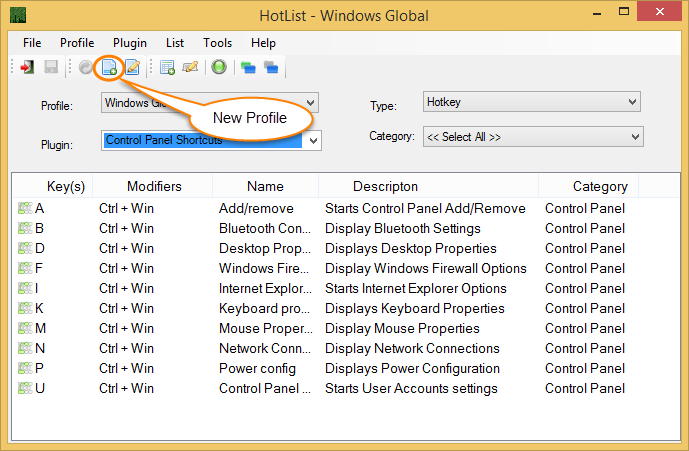

New Profile can be created by Choosing the Profile / New Menu item or clicking the New Profile button as shown in figure 1.
When the new profile is launched you will see a window similar to figure 2.

Remarks
If the Profile is created as a Global Profile then the Windows Tab becomes a black list. All entries added to the Windows tab will be excluded from the Profile.
If the Global option is not checked then all entries on the Windows tab will be included and all other windows will be excluded.